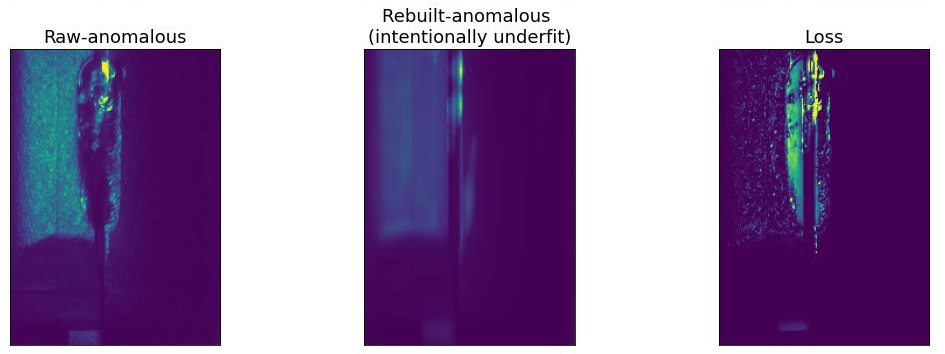
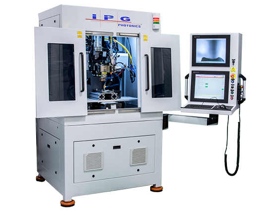
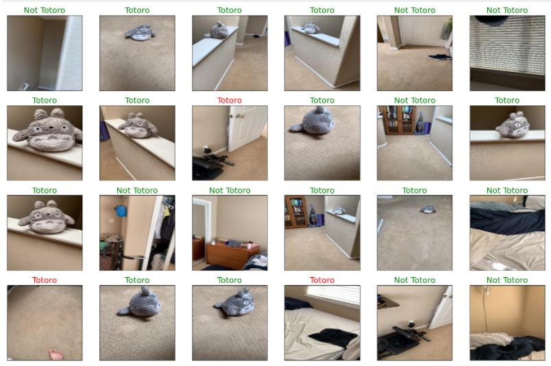
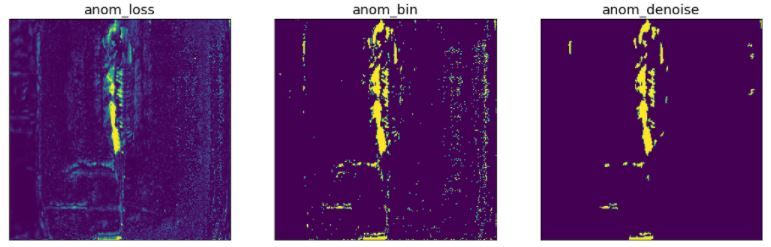

AutoEncoder
Explore the code!
To learn about my application, and auto-encoders in general, keep reading. If you just want to see the code, follow the link!
Notable Features:- Preprocessing: loading, normalization, histogram equalization
- Model and Training
- Postprocessing:
- Creating Loss Images (pseudo-segmentation)
- Thresholding
- Denoising (I created my own algorithm for this that worked really well! (I imagine someone has done something similar before - let me know if it has a name.)
- Analysis: Plotting precision-recall curves, and false-alarm/escape curves to set thresholds
What is an AutoEncoder
An autoencoder is a FeedForward CNN (Convolutional Neural Network) that compresses an image into a small hidden layer, sometimes called a latent space, and then reverses that operation to restore the original image. The act of encoding the image data into a lower dimensional space is what lends the model its name.
Lossy Compression This latent space can be much more efficient than traditional compression methods. This is because the model trains on a data set, learning about the features found in that particular data set. However, high compression ratio is just one of the benefits. While the latent space is learns to be extremely good at replicating a certain type of image, it is lossy. This means that when an image is restored, it will be able to approximate the original image, but not be able to restore it perfectly. We can tune the model, hyperparameters, and training data to make the model to prioritize certain features, and not place any value on others.
Denoising: One common application of this is to train a model to compress clean images,
with very little noise. The model learns to compress and saves the key features for an image,
whether it's noisy or not. Then, when a noisy image is processed, it saves it,
forgetting the noise, and restoring the image without noise.
See more in the keras documentation.

Anomaly Detection (the focus of this project): Similarly, we can train a model to encode a specific type of image, and then reuild everything from that. Have you ever talked to a friend who was so obsessed with a topic, that they saw the whole world through that lens? If you train a model to compress pictures of fire trucks, then don't be surprised when you give it a picture of a boat, and it comes out red, with a ladder on top. It only knows how to describe the scene in terms of things it's experienced before.
That's exactly what I do in this project. I teach the model what a good/nominal part looks like, and then ask it to reproduce that part. Anything it doesn't understand will fail to encode, and will effectively disappear when I restore the image. By comparing the original image to the restored image, I can create a mask showing all the areas that look different. This mask represents anomalies in the image.
How does an autoencoder work?
This will only make sense if you already know the basics of a feed-forward CNN. Basically you just have a serious of convolution layers maxpooling layers that compress the data down. Then you expand it back to the original size using the inverse, which is a series of convolutionTrapose layers (matching the stride to the original pooling sizes). The smaller the center layer, the higher the compression ratio. A high compression ratio means a highly specialized encoder, which means a model that does better at compressing a specific type of image. If we compress too far, we won't even capture the variation of nominal inputs, so there is a balance to strike.
I also found that increasing the channel dimension was critical to getting good results, since I'm looking for local features. This isn't the case in the simple denoiser, where you actually want to hold onto much of the spatial information.
Then you train the model by making the labels (expected output) the same as the input. This gradually teaches the model to reproduce the original image.
Application Background:
When I built this, I was automating a CNC welding machine. I was writing programs to position the parts, identify features to aim the welding laser, and assess whether the part was welded, and charactize the quality of the weld. This required writing different multiple programs for each welding application.
I wanted to explore ways to generalize a single program so that I could just feed in a dataset, tune a few hyper parameters, and have the new weld application working. Furthermore, the tools I was use (Cognex Vision Systems) had a conventional toolset, which was intended for finding lines/shapes/features, but struggled with more advanced chaeracterization, such as weld "quality". The programs we wrote certainly couldn't find something unless we knew what we were looking for.

Problem Statement
For the sake of this project, we want to find 2 types of anomalies:
- Known Anomalies: These are anomalies that can be predicted, and which we can specifically inspect a part for. These are generally easier to find, since we know what we're looking for.
- Unknown Anomalies: These are harder to find, because we don't know what we're looking for. We just know what a good part looks like, and we want to spot anything that looks out of place.
For both (1) and (2), we will be writing a program to detect anomalies immediately before performing a weld. The most common anomaly occurs when an operator mixes up parts, and re-inserts the part that was just welded. To simulate this, I collected ~300 images, 147 of which are not yet welded (nominal), and 146 of which are welded (anomalous). We'll be primarily trying to distinguish between these two cases.
Bonus: In addition to detecting the presence of a weld, we would like to be able to find Unknown anomalies, and characterize the individual welds.
Simple Detection / Binary Classification
Binary Classification is the obvious choice for determining the presence of a specific feature/defect. I absolutely started there, and it worked quite well. The program makes good use of some tensorflow tools that greatly simplify data loading, and augmentation. However, everyone binary classifiers are everywhere...In fact, I should have used an established model (like VGG-16) and just frozen the last few layers.
However, that program was originally written for an RGB camera (I'm using grayscale now), That data also ended up being inappropriate to share, since it showed an unreleased product from my previous company. So...I got a bit creative, and swapped in pictures of a stuffed Totoro (from the beloved Miyazaki movie). Feel free to look through that notebook, and find Totoro lounging around my home! 
Why an auto-encoder / anomaly detector
An anomaly detector can start to find Unknown anaomalies. Reading through the notebook, you'll find that the model is entirely trained on the nominal (unwelded) dataset, and it is capable of detecting any anomalies, not just the welds (although that is the dataset we'll focus on. When we know the specific location of an anomaly, the predictive power of this model increases even further.
We can begin to build a map of the weld itself. This is effectively a poor man's segmentation program. In traditional segmentation, the output would be the region of interest. In this method, it actually ends up being the resulting loss, given the original input and the reconstructed output. However, it is still very effective at highlighting those features. If I were still working on this project, I'd absolutely love to talk to the laser experts and try to understand how to characterize a weld as "good". I know some of the metrics we considered were the overall dimensions of the weld, and exactly how well it was positioned...a future feature may be a more in-depth analysis of weld "quality"
The Repo can be found here.
If you've made it this far, I strongly encourage you to look through the autoencoder notebook.